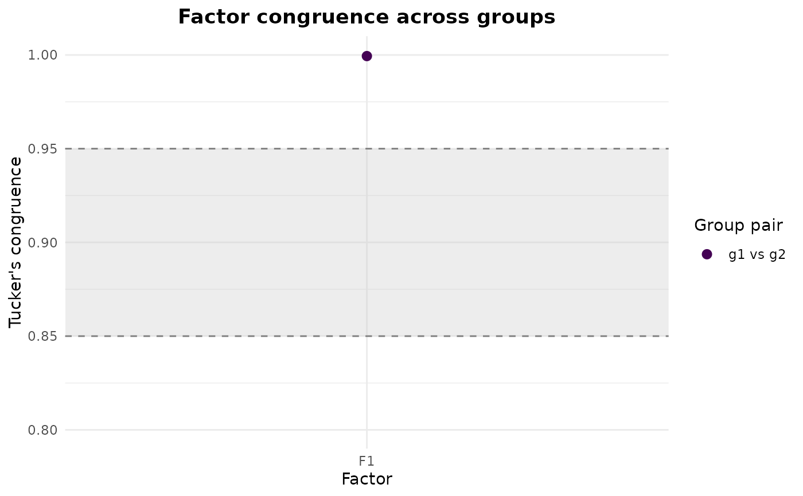
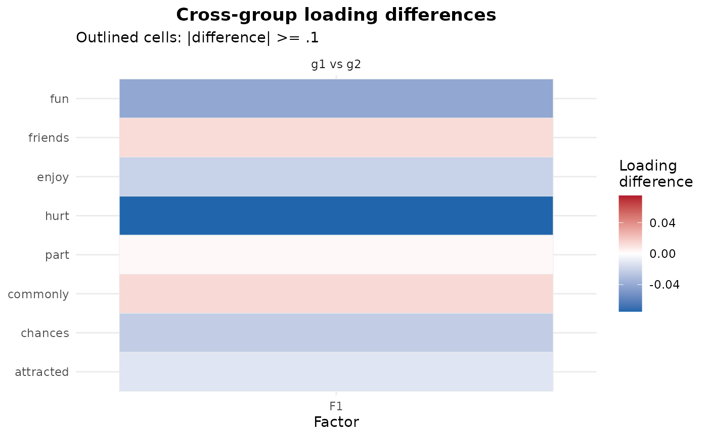

Two views of an efa_group() result, selected by type:
An object of class efa_group (output from efa_group()).
character. Which plot to draw: "congruence" (per-factor congruence with
confidence intervals) or "differences" (a per-item loading-difference heatmap).
Not used; for consistency with the generic.
A ggplot2::ggplot object.
"congruence" (the default) plots the matched Tucker congruence of each factor
between every group pair, with a percentile bootstrap confidence interval when one
was computed (b_boot > 0). The Lorenzo-Seva and ten Berge (2006) reference bands
(.95 "equal", .85 "fair") are drawn so a factor's cross-group similarity can be
read against them at a glance.
"differences" draws a heatmap of the signed cross-group loading differences (item
by factor, one panel per group pair). Cells whose absolute difference reaches the
salience threshold delta are outlined.
Lorenzo-Seva, U., and ten Berge, J. M. F. (2006). Tucker's congruence coefficient as a meaningful index of factor similarity. Methodology, 2, 57-64. doi: 10.1027/1614-2241.2.2.57
Other factor analysis:
efa_group(),
print.efa_group()
g <- rep(c("g1", "g2"), length.out = nrow(GRiPS_raw))
mg <- efa_group(GRiPS_raw, groups = g, n_factors = 1)
#> ℹ `x` is not a correlation matrix; computing correlations from the raw data.
#> ℹ `x` is not a correlation matrix; computing correlations from the raw data.
# Per-factor congruence against the Lorenzo-Seva & ten Berge bands
plot(mg)

# Per-item cross-group loading-difference heatmap
plot(mg, type = "differences")
